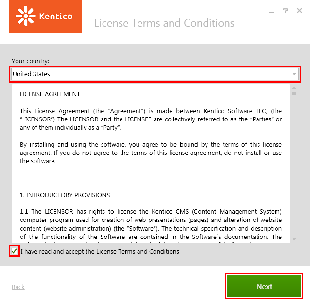
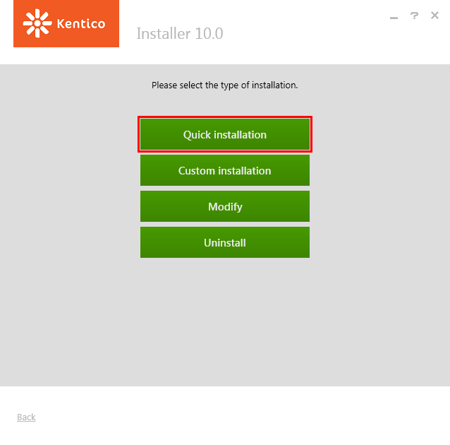
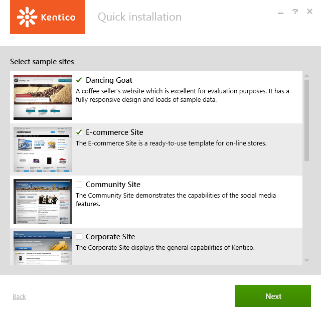
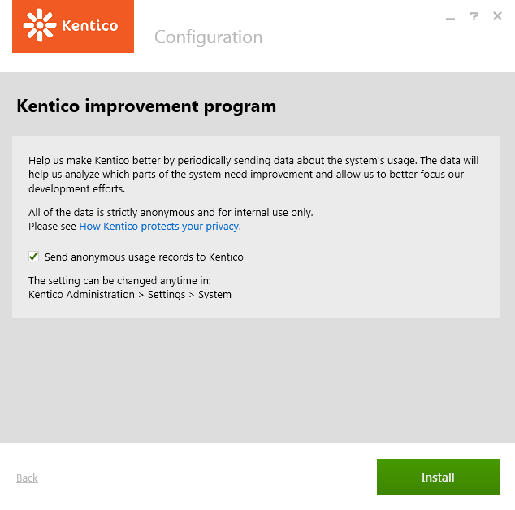

Quick installation on a local machine
This type of installation is the quickest way of installing Kentico on your machine. The only prerequisites are:
The operating system Windows 7 Service Pack 1 (both 32bit and 64bit) and newer or Windows Server 2008 R2 Service Pack 1 and newer
At least 4 GB memory (RAM), 200 MB database size
Connection to the Internet
Recommended resolution: 1920x1080 (also known as 1080p or Full HD)
You can see all prerequisites in detail in Server and hosting requirements.
Quick installation
All you need to do is:
If you do not have the installer file, contact Kentico support to obtain one (you can download the latest version of Kentico from xperience.io).
Start the installer.
Click Next on the welcome screen of the installer.
Select your country from the drop-down list. The installer automatically tries to pre-select the appropriate country based on your system's locale.
Agree to the license terms and click Next.

License agreement and country selectionClick Quick installation.

Quick installation
Choose the sample sites you wish to install. We recommend Dancing Goat, E-commerce Site, and Corporate Site. These sites utilize and present most of the functionality Kentico provides and are therefore best suited for evaluation purposes.
License limitations for sample sites
Some of the sample sites use features that are only available in specific Kentico license editions. If you use a license edition lower than Kentico EMS, you may encounter problems when working with certain features (Content Personalization, for example). The initial trial license is equivalent to an EMS license.

Click Next.
Decide whether to participate in the Kentico improvement program (via the Send anonymous usage records to Kentico checkbox).

Kentico improvement programClick Install.
The installer now installs Kentico, including everything else needed for it to run.
Default configuration of the quick installation
If you choose the Quick installation option, the installer installs and configures the following items:
.NET Framework 4.6
Program files (in C:\Program Files (x86)\Kentico\11.0\)
IIS Express (if you do not have IIS and all required components installed already) with a virtual directory (http://localhost/Kentico11)
SQL server native client
SQL Server 2012 Express LocalDB
Kentico database
Kentico web site project (in C:\inetpub\wwwroot\Kentico11\)
Kentico core files
All available modules
All sample site templates
All available spell checker dictionaries
Your chosen sample sites
Trial license